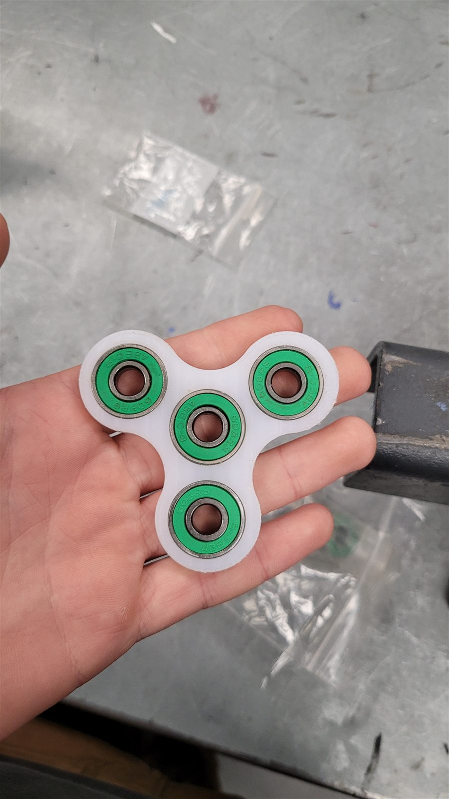
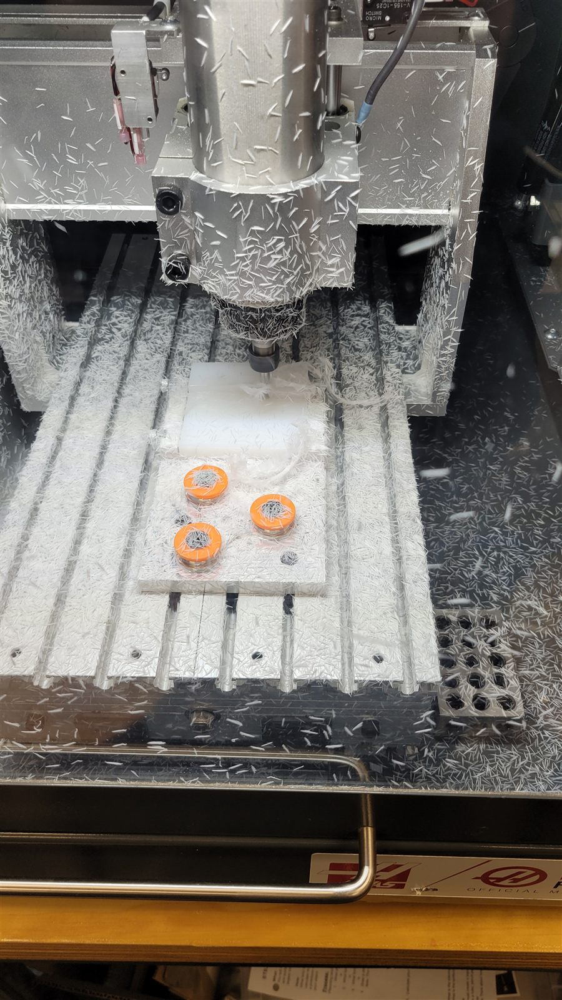
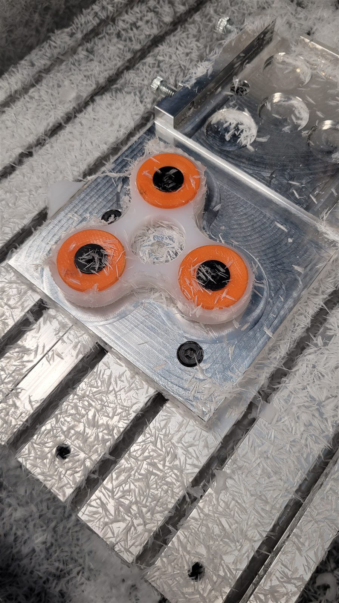
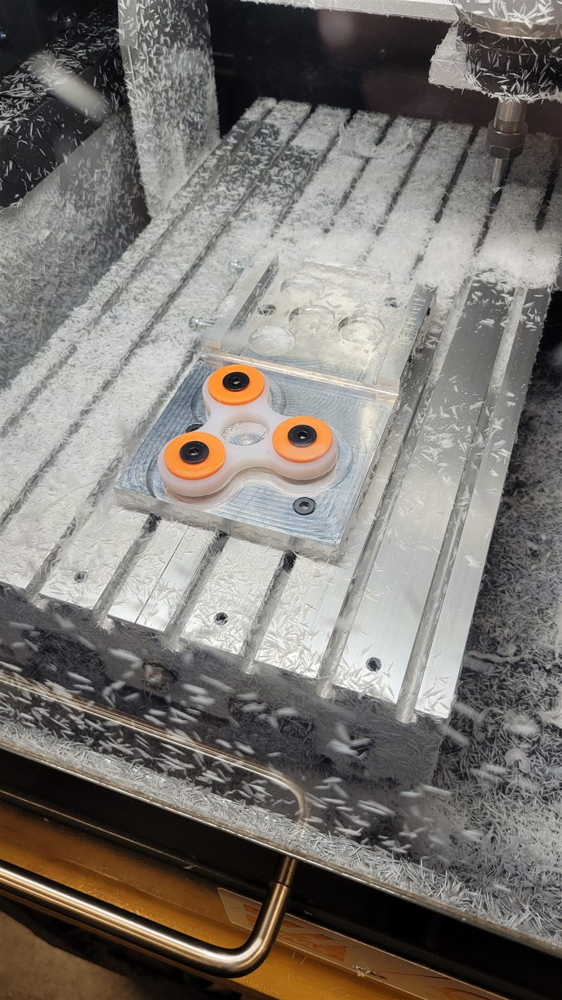

HAAS CNC Fidget Spinner




Overview
I learned how to use HAAS CNC desktop mill to create a fidget spinner.
Design & Challenges
I had one month time constraint to learn how to use the HAAS CNC desktop mill and design the fidget spinner. Although I was following the instructions, the main challenges were to understand tool offsets, G-code and design for manufacture. All the tool processing and design was done in Fusion 360.
Results
The project was successful in achieving its goals. I was able to create a functional fidget spinner using the HAAS CNC desktop mill. The experience taught me valuable skills in CNC machining and design for manufacture.